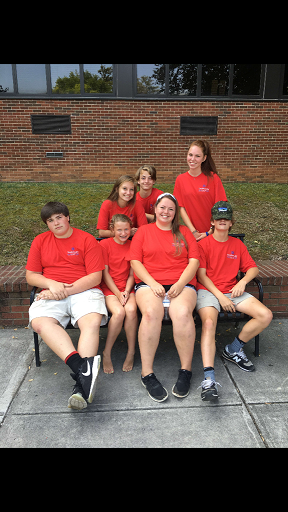
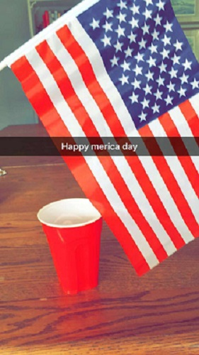

I went to a cool camp called Camp Woodie.There we do a lot of fun thing, like canoeing, archery, fishing, shooting and learing conservation and the names of ducks and other wild life.My counselors name was Trey, His nickname was sascootch.He told a lot of funny stories and went fishing with us a lot. We came up with a lot of funny thing. He gave us a ton of funny nicknames. Mine was grizzley.When ever we saw Susan, the osprey that lives there, we would yell her name.
The chuch camp I went to was called Unidiversity.the camp is at the University of Tennessee.I go with my youth group.My roommate was one of my best friends, Austin.The theme this year was called "Christmas Presence". We were talking about the presence of god during the christmas season and where we see him. I met a lot of new people.Most of them were from Aiken. On our free day we went to ijams.There, I jumped off a 45 foot tall rock and swam in a quarry. Then ate bbq with my youth group.It was one of the funnest days of the summer.
This summer I went to the beach. I went on the 4th of July to Pawleys Island. There I fish, watch fireworks, relax and spend time with my family. This is one of my favorite weeks of the year because I get to relax and get to spend time with my family.
Thank you for visiting my website!!!-Woods
 